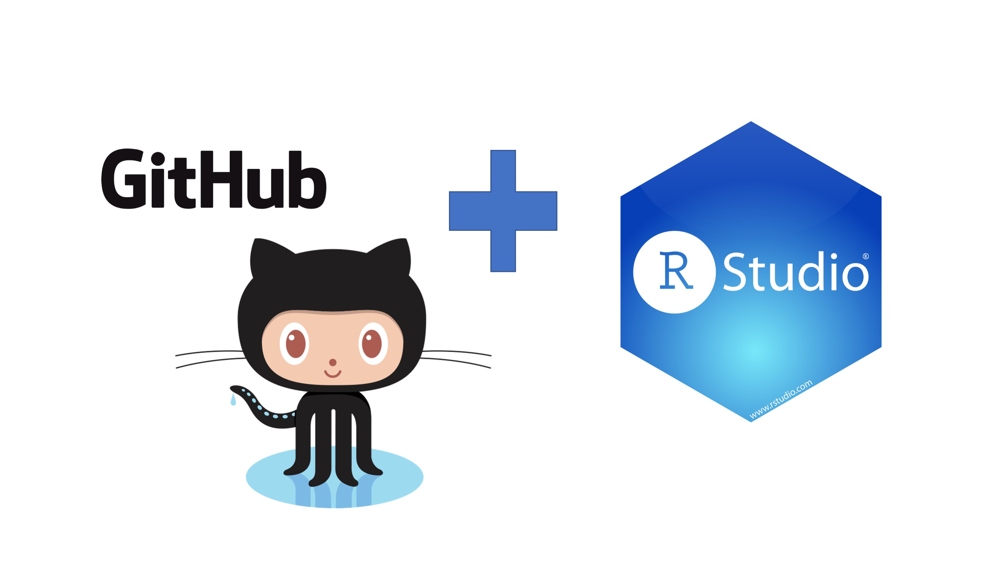

3 Version Control and RStudio
3.1 Learning Objectives
- What is version control
- What is GitHub
- How to set up a remote repository on GitHub
- Connecting Rstudio to GitHub
- Create a personal access token for pushing changes to GitHub
- What is a commit
- Push changes to a remote repository
- How to delete a repository
- Use a template to create a repository on GitHub
3.2 Why Git?
Git is a version control system. Its original purpose was to help groups of software developers work collaboratively on big software projects. Git manages the evolution of a set of files – called a repository – in a sane, highly structured way. If you have no idea what I’m talking about, think of it as the “Track Changes” features from Microsoft Word but supercharged.
Version control systems start with a base version of a document and then record changes you make each step of the way. You can think of it as a recording of your progress: you can rewind to start at the base document and play back each change you made, eventually arriving at your more recent version.
Once you think of changes as separate from the document itself, you can then think about “playing back” different sets of changes on the base document, ultimately resulting in different versions of that document. For example, two users can make independent sets of changes on the same document.
Unless multiple users make changes to the same section of the document - whats known as a conflict - you can incorporate two sets of changes into the same base document.
A version control system is a tool that keeps track of these changes for us, effectively creating different versions of our files. It allows us to decide which changes will be made to the next version (each record of these changes is called a commit), and keeps useful metadata about them. The complete history of commits for a particular project and their metadata make up a repository. Repositories can be kept in sync across different computers, facilitating collaboration among different people.
Because of its usefulness git has been re-purposed by the data science community. In addition to using it for source code, we use it to manage the motley collection of files that make up typical data analysis projects, which often consist of data, figures, reports, and, yes, source code.((eds) 2019)
3.3 What’s GitHub?
GitHub, Bitbucket, and GitLab are online services that provide a home for your Git-based projects on the internet. If you have no idea what I’m talking about, think of them as DropBox but much, much better. The remote host acts as a distribution channel or clearinghouse for your Git-managed project. It allows other people to see your stuff, sync up with you, and perhaps even make changes. These hosting providers improve upon traditional Unix Git servers with well-designed web-based interfaces.
Even for private solo projects, it’s a good idea to push your work to a remote location for peace of mind. Why? Because it’s fairly easy to screw up your local Git repository, especially when you’re new at this. The good news is that often only the Git infrastructure is borked up. Your files are just fine! Which makes your Git pickle all the more frustrating. There are official Git solutions to these problems, but they might require expertise and patience you can’t access at 3a.m. If you’ve recently pushed your work to GitHub, it’s easy to grab a fresh copy, patch things up with the changes that only exist locally, and get on with your life. Don’t get too caught up on public versus private at this point. There are many ways to get private repositories from the major providers for low or no cost. Just get started and figure out if and how Git/GitHub is going to work for you!
We will not be covering all the in’s and outs of version control with Git, GitHub and all the resources to be found there since our time is limited. Instead you will learn how to:
Set up a remote repository on GitHub
Checking out a project from a version control remote repository
Connecting RStudio to GitHub
Set up a personal access token on GitHub
Making some changes, using the Rstudio Git controls and pushing those changes to GitHub
3.4 Setting up a remote repository on GitHub
First thing we do is navigate to GitHub, make sure you’re logged in.
Click green “New repository” button. Or, if you are on your own profile page, click on “Repositories”, then click the green “New” button.
How to fill this in:
- Repository name: myrepo (or whatever you wish, we’ll delete this soon anyway).
- Description: “testing my setup” (or whatever, but some text is good for the README).
- Public.
- YES Initialize this repository with a README.
- For everything else, just accept the default.
Click big green button “Create repository.”
Copy the HTTPS clone URL to your clipboard via the green “Clone or Download” button.
3.5 Connecting Rstudio Cloud to GitHub
Here we verify that RStudio can issue Git commands on your behalf. This means you’ll be able to pull from and push to GitHub from RStudio.
3.6 Checking out a project from a version control remote repository
Picking up were we left off when Setting up a remote repository copy the HTTPS clone URL to your clipboard via the green “Clone or Download” button.
3.7 Clone the new GitHub repository to your computer via RStudio
In RStudio Cloud, start a new Project:
RStudioCloud > New Project > New Project from Git Repository. In “Repository URL”, paste the URL of your new GitHub repository. It will be something like this:
https://github.com/j-p-courneya/MRP_GitHub_Practice.git.Accept the default project directory name, e.g. MRP_GitHub_Practice, which coincides with the GitHub repo name.
Take charge of – or at least notice! – where the Project will be saved locally. A common rookie mistake is to have no idea where you are saving files or what your working directory is. Pay attention. Be intentional. (if working in local RStudio, not Posit Cloud)
I suggest you check “Open in new session”, as that’s what you’ll usually do in real life (if working in local RStudio, not Posit Cloud).
Click “Create Project”.
You should find yourself in a new local RStudio Project that represents the new test repo we just created on GitHub. This should download the README.md file from GitHub. Look in RStudio’s file browser pane for the README.md file.
3.8 Introduce yourself to Git
Now we will configure git to talk with GitHub from RStudio.
The usethis package (Wickham, Bryan, and Barrett 2022) offers an approach to set your Git user name and email from within R as well as setting up a personal access token. Why does this matter? Because we want to be able to push changes to our remote repository (save what we work on locally, on GitHub).
To configure git:
## install if needed (do this exactly once):
install.packages("usethis")
library(usethis)
use_git_config(user.name = "Jane Doe", user.email = "jane@example.org")Check what you just did usethis::git_sitrep() generates a git situation-report. It can help you confirm things will work as expected; it can also help you diagnose problems:
library(usethis)
use_git_config(core.editor = "nano")3.9 Get a personal access token (PAT)
3.9.1 Create the PAT
In this step you will be creating a PAT. Since GitHub is moving away from username + password to push to their server it will be inevitable that you must set this up to work with GitHub from your local computer and RStudio. To create the token using usethis run:
create_github_token()You will see running this command takes you to a pre-filled form to create a new PAT. You can get to the same page in the browser by clicking on “Generate new token” from https://github.com/settings/tokens. The advantage of create_github_token() is that the usethis maintainers have pre-selected some recommended scopes, which you can look over and adjust before clicking “Generate token”. It is a very good idea to give the token a descriptive name, because one day you might have multiple PATs, e.g., one that’s configured on your main work computer and another that you use from a secondary computer or VM. Eventually, you’ll need to “spring clean” your PATs and this is much less nerve-wracking if you know which PAT is being used where and for what.
You must store this token somewhere, because you’ll never be able to see it again, once you leave this browser window. If you somehow goof this up, just generate a new PAT and, so you don’t confuse yourself, delete the lost token. In the moment, we usually copy the PAT to the clipboard, anticipating what we’ll do next: trigger a prompt that lets us store the PAT in the Git credential store.
3.9.2 Put your PAT into the Git credential store
Next you need to run:
gitcreds::gitcreds_set()You will have the gitcreds package installed, as of usethis v2.0.0, because usethis uses gh, and gh uses gitcreds.
If you don’t have a PAT stored already, it will prompt you to enter your PAT. Paste!
If you do already have a stored credential, gitcreds::gitcreds_set() reveals this and will even let you inspect it. This helps you decide whether to keep the existing credential or replace it. When in doubt, embrace a new, known-to-be-good credential over an old one, of uncertain origins.
Here are two great ways to check that all is well:
gh::gh_whoami()
usethis::git_sitrep()Both of these functions reveal whether a GitHub PAT is discovered and provide information about the associated user, the PAT’s scopes, etc.
This step is something you do once. Or, rather, once per machine, per PAT. From this point on, usethis and its dependencies should be able to automatically retrieve and use this PAT.
3.10 Making some changes, save, commit.
From RStudio, modify the README.md file, e.g., by adding the line “This is a line from RStudio”. Save your changes.
Commit these changes to your local repo. How?
From RStudio:
Click the “Git” tab in upper right pane.
Check “Staged” box for README.md.
If you’re not already in the Git pop-up, click “Commit”.
Type a message in “Commit message”, such as “Commit from RStudio”.
Click “Commit”.
3.11 Push your local changes online to GitHub
Click the green “Push” button to send your local changes to GitHub. You should see some message along these lines.
[master dc671f0] blah
3 files changed, 22 insertions(+)
create mode 100644 .gitignore
create mode 100644 myrepo.Rproj3.12 Confirm the local change propagated to the GitHub remote
Go back to the browser. I assume we’re still viewing your new GitHub repo.
Refresh.
You should see the new “This is a line from RStudio” in the README.
If you click on “commits”, you should see one with the message “Commit from RStudio”.
If you have made it this far, you are DONE with set up.
3.13 Clean up
At this point since this was all practice you might be interested in deleting the practice repo. It is also good to learn how to do this for real-life scenarios.
Local When you’re ready to clean up, you can delete the local repo any way you like. It’s just a regular directory on your computer.
GitHub In the browser, go to your repo’s landing page on GitHub. Click on “Settings”.
Scroll down, click on “delete repository,” and do as it asks. GitHub really wants to make sure you definitely want to get rid of the repository.
3.14 Clone a template repository from MRP-Bioinformatics
The bioinformatics core has set up a organization account on GitHub. A GitHub organization is a shared workspace on the GitHub platform where individuals and teams collaborate on projects, manage repositories, and coordinate their development efforts.
GitHub organizations have repositories just like personal accounts do. Also for routine structured repositories, like for when youre going to work on a code project, a user can create a “template” repository which can be cloned to a persons user account or to another organization. Lets practice doing that
- Navigate to MRP-Bioinformatics organization page https://github.com/mrp-bioinformatics
- Under repositories look for “new_project_template” and select it
- Feel free to examine its contents clicking around in the files and directories.
- Next we will click “Use this template” and choose “Create a new repository” to clone it to our personal GitHub accounts.
- Fill out the form naming the new repository. This is a great point to start from for version controlled projects because you are inheriting an ideal directory structure and creating a repository at the same time instead of starting frorm scratch.
- Select whether you want a Public or Private repository
- Leave “Include all branches” unchecked
- Mash the green button “Create repository from template”
- Bask in glory of your amazing GitHub skills!
This brings us to the conclusion of this training. Stay tuned for more learning opportunities and dont forget to like and subscribe (JK!)